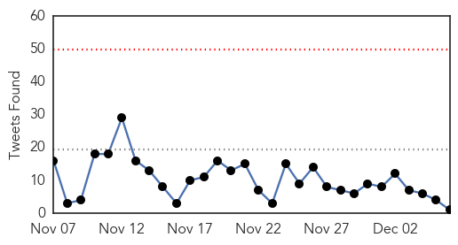

Ebola
30-Day Web Trend
0 alerts, 0 warnings
30-Day Twitter Trend
0 alerts, 0 warnings

Article Locations

Article Confidences
Top Articles:
- 1.000
- Doctor treated at British-run Ebola military clinic in Sierra Leone dies
- 1.000
- Ebola ‘czar’ urges Congress to authorize emergency funding
- 1.000
- Mali releases UN peacekeepers from Ebola quarantine
- 1.000
- Dangerous practices spread Ebola
- 1.000
- Third member of U.N. mission in Liberia contracts Ebola
- 1.000
- Ebola Claims Lives of Two Sierra Leone Doctors on Same Day
- 1.000
- King County health officials test patient who returned from Africa, developed fever
- 1.000
- Ebola Survivor Talks About His Experience
- 1.000
- Patient at Harborview being tested for possible Ebola
- 0.999
- Sources Claim 2 Doctors Died of Ebola in Sierra Leone in One Day
- 0.999
- UN Appeals for Global Aid to Ebola-Affected West African Countries
- 0.999
- Experimental Treatment Cures Cuban Doctor of Ebola
- 0.999
- Ebola: Nigerian Medical Volunteers Arrive in Sierra Leone and Liberia
- 0.999
- Cuban doctor leaves Geneva after recovering from Ebola
- 0.999
- Two Sierra Leone Ebola Doctors Die in One Day
- 0.999
- Cuban Ebola patient recovers after treatment in Geneva
- 0.999
- Recovered From Ebola, Cuban Doctor Returns Home
- 0.999
- At home and cured of Ebola, Cuban doctor vows return to Africa
- 0.999
- Two Sierra Leone Ebola doctors die in one day
- 0.999
- Ebola-Infected Cuban Doctor Successfully Treated at Swiss Hospital
- 0.999
- Recovered from Ebola, Cuban doctor returns home
- 0.999
- Two Sierra Leone #Ebola doctors die in one day
- 0.999
- 2 more Sierra Leonean doctors die of Ebola
- 0.999
- Cuban Ebola patient recovers after treatment in Geneva
- 0.998
- 11th Sierra Leonean Doctor Infected with Ebola
- 0.998
- Recovered from Ebola, Cuban doctor returns home
- 0.998
- At home and cured of Ebola, Cuban doctor vows return to Africa
- 0.998
- Sierra Leone's Ebola battle is being led by local talent that deserves our support
- 0.997
- CAF deploys medical team to Ebola-stricken Sierra Leone
- 0.997
- CAF deploys medical team to Ebola-stricken Sierra Leone
- 0.997
- Hollande cheered in Guinea
- 0.997
- Sierra Leone: Sierra Leone: In communities at risk, the fight against Ebola and malaria goes hand in hand
- 0.997
- Dr. Felix Baez Recovers From Ebola In Geneva Switzerland
- 0.997
- U.N. peacekeeper with Ebola arrives in Netherlands for treatment
- 0.995
- Inside the lab: The race to create an Ebola vaccine
- 0.995
- Inside the lab: the race to create an Ebola vaccine
- 0.995
- Ebola czar Klain to return to private sector in March
- 0.995
- UN peacekeeper flown to Netherlands for Ebola treatment
- 0.995
- Ebola crackdown – Sierra Leone may jail entire families if bodies are hidden
- 0.994
- thenews.com.pk
- 0.993
- Nigerian Ebola volunteers fly into Liberia, Sierra Leone
- 0.992
- Cuban Ebola patient set for Geneva release
- 0.992
- Elaborate Ebola claims all lies: CDC
- 0.992
- Ebola Fight Sees Canadian Forces Medical Team Deployed To Sierra Leone
- 0.991
- Cuban Doctor Overcomes Ebola, to Return to Island
- 0.989
- Cuban Doctor Successfully Treated For Ebola in a Swiss Hospital
- 0.989
- Mali frees UN peacekeepers from Ebola quarantine - Mali
- 0.988
- Nigerian Medics Arrive Liberia, Sierra Leone To Fight Ebola
- 0.987
- S/Leone: US expert shares Liberian experience on Ebola
- 0.984
- Sierra Leone: In communities at risk, the fight against Ebola and malaria goes hand in hand - Sierra Leone
Showing top 50 articles...
Top Tweets:
- 0.761
- RT: CDC profiles Ebola queries; UN worker sickened in Liberia http://t.co/pLKGHcnYKw
- 0.744
- RT: [NPR] World's Slow Response To Ebola Leaves Sierra Leone Villages Scrambling http://t.co/4YywEaAzoR EbolaNews
- 0.744
- In Liberia, the growth in Ebola cases cld not have been slowed w/o changes in people's behavior.Let's hope Sierra Leone does the same soon.
- 0.623
- RT: Now three Sierra Leonean doctors die of Ebola in 24 hours http://t.co/PtP88PYNZE
- 0.582
- 8th Sierra Leonean Doctor Dies of Ebola http://t.co/j3oylLKrAE
- 0.546
- RT: Quarantines are causing intolerable conditions for people already struggling to cope, risk further spread of Ebola http://t.co…
West Nile Virus
30-Day Web Trend
0 alerts, 0 warnings

30-Day Twitter Trend
0 alerts, 0 warnings

Article Locations

Article Confidences

Top Articles:
-
No articles found for Dec 06, 2014
Top Tweets:
-
No tweets found for Dec 06, 2014